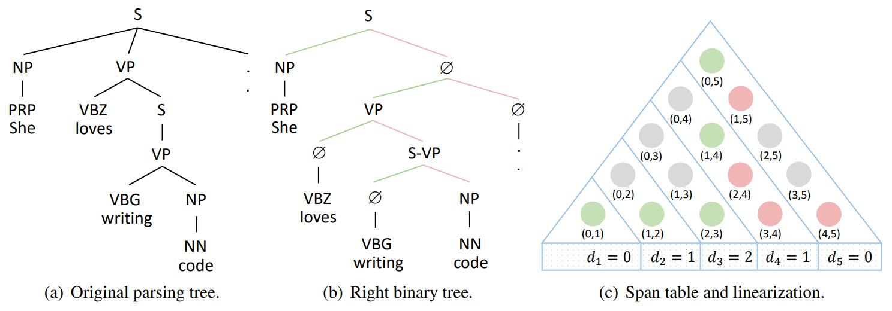
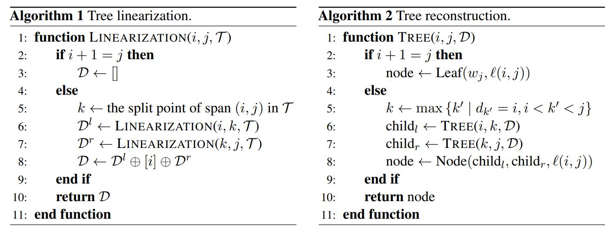
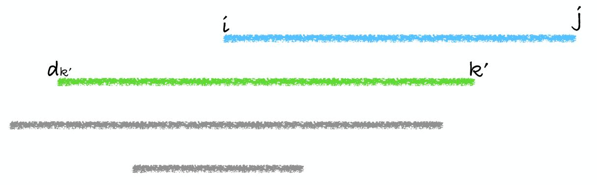
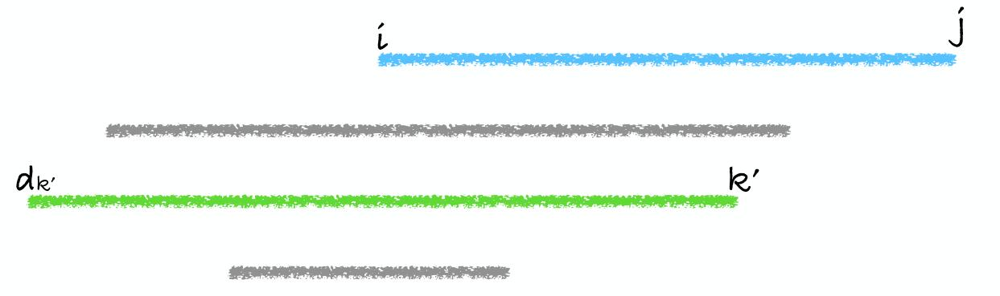
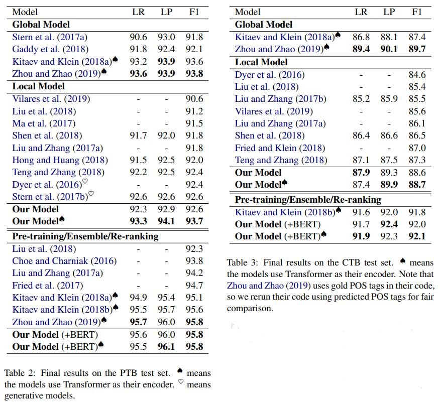
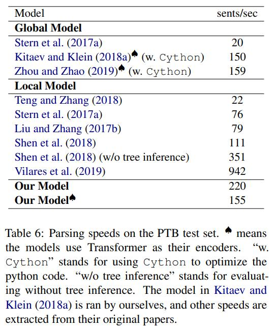
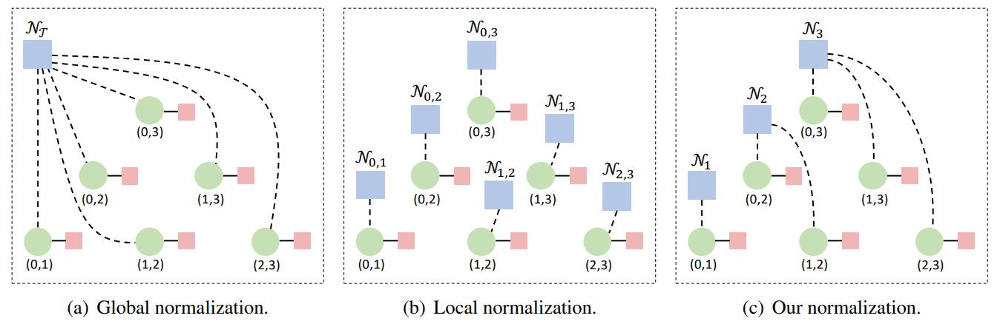

论文作者：godweiyang，末流985研三，ACM退役蒻苣，爱好算法，目前在字节跳动AI Lab实习，业余喜欢PUBG和LOL。
论文地址：A Span-based Linearization for Constituent Trees
代码地址：https://github.com/AntNLP/span-linearization-parser
PPT地址：https://godweiyang.com/2020/08/30/acl20-yangwei-parsing/ACL2020.pdf
前言
不知不觉在字节跳动实习也快四个月了，在这高强度快节奏的工作生活中，也是收获颇多。然而博客也很久很久没更新过了，论文阅读了那么多，却一直没空写写自己中的这篇。今天趁周末分享一下自己发在今年ACL上的这篇工作，主要贡献就是提出了一种新颖的成分句法树的序列表示方法。建议配合我的PPT阅读，里面有很多例子。
介绍
成分句法分析任务的目的就是解析出一个句子的短语结构树，详细的介绍都可以在我写的综述里找到：成分句法分析综述（第二版）。
当前主流的成分句法分析方法我按照归一化目标主要分为两类：
- 一是基于CKY的全局归一化方法，优化整棵句法树得分之和。也就是采用动态规划算法解析，时间复杂度较高（$O(n^3)$），但同时效果是目前SOTA的。
- 二是各种局部归一化方法，优化目标是单个目标得分（例如span、action、syntactic distance等等）。这一类方法具体包括基于shift-reduce的转移系统、各种序列化方法（例如syntactic distance）、基于CKY解码的局部归一化模型等，速度通常都很快，但由于局部归一化并没有考虑到全局特征，所以效果普遍较差。
详细说两个以往的局部归一化方法吧。例如预测句法树的括号表达式，然后还原成句法树，这种方法效果非常差，因为很难解决括号匹配合法性的问题，模型很难学。再如syntactic distance，因为预测的是浮点数序列，所以约束太松了，只要求相对大小合适就行，可解释性也较差，没有和span紧密结合起来，因此最后效果也一般。最后转移系统也会存在exposure bias的问题，效果也不尽如人意，基本没人使用了。
动机
回到主题，针对上面这么多问题，我想寻找一种更好的序列表示方法，如果能够和span更直接联系起来就最好了。其实这篇论文idea出来的初期，我是想用上GNN（GAT）的，那么就得有一张图，而传统的成分句法树不适合直接GNN建模，因为节点数不确定，图没法提前获得。因此我就联想到了我师兄去年发的一篇依存句法树应用GAT的工作：Graph-based Dependency Parsing with Graph Neural Networks。如果有一个办法能让成分句法树表示成依存树那样就好了！于是我这个idea就逐渐成型了，虽然最后并没有用上GNN。
序列化方法
我原论文里面有很多公式和证明的部分，这里我就跳过了，其实方法的思想非常的简单。

如上图所示，句法树原本可能不是二叉的，因此要先转成二叉树，然后这个二叉树在span表中（图c）绿色的部分就是所有的左孩子（包含根结点），红色的部分就是所有的右孩子。
然后可以轻易发现，所有左孩子的右边界一定不存在重复，因此一定一一对应了 $[1, n]$ 中的值，那么就可以把它们作为序列化后的下标，而相应的左边界就作为序列化后的值。举个例子，图中 $(1, 4)$ 这个span表示的是”loves writing code”这个短语，那么序列化数组$d$的下标4处的值就是 $d_4 = 1$。
同时可以发现，这个序列满足另一种定义，也就是 $(d_i, i)$ 一定是以 $i$ 作为右边界的最大的span，这用反证法可以轻易证明。
最后就可以得到序列化后的数组 $d$，同时这个序列满足两个性质：
- 一定满足 $d_i < i$ ，因为 $(d_i, i)$ 是某个左孩子。
- 对于任意的 $j > i$，$d_j$ 一定不会在 $(d_i, i)$ 范围里，否则的话 $(d_j, j)$ 就和 $(d_i, i)$产生交叉了。
同时可以证明，满足如上两个条件的任意非负整数序列都可以唯一还原成一棵句法树。序列化和反序列化伪代码如下：

注意这里的反序列化有个前提假设：$d$ 一定要是满足上面两个条件的合法序列！至于不合法的怎么办？下面会详细讲。
模型
模型方面没有什么新意，借鉴了依存句法分析模型bi-affine attention。
输入是词向量、字向量、位置向量拼接：
$$
x_i = [e_i; c_i; p_i].
$$
然后用LSTM或者Transformer得到每个单词的隐层表示 $h_i$，为了区分span的左右边界表示，我采用了两套表示：
$$
l_i = \text{MLP}_l(h_i),\quad r_i = \text{MLP}_r(h_i).
$$
然后就可以用bi-affine attention计算两个边界的相关性了：
$$
\alpha_{ij} = l_i^\top {\bf W} r_j + b_1^\top l_i + b_2^\top r_j,
$$
接着对所有小于 $j$ 的attention做局部归一化，就得到了左边界为 $i$ 的概率：
$$
P(i|j) = \text{Softmax}_{i}(\alpha_{ij}), \forall i < j.
$$
最后取概率最高的左边界作为预测的序列值：
$$
d_j = \mathop{\arg\max}_{i} {[P(i|j)]}, \forall i < j.
$$
对于句法树的label，我没有直接用序列方法预测，而是先用序列 $d$ 反序列化得到句法结构，然后利用句法结构预测label，这样准确率会高很多：
$$
P(\ell|i, j) = \text{Softmax}(\text{MLP}_{\text{label}}([l_i; r_j]))_{\ell}.
$$
损失函数就是 $n$ 项结构损失加上 $2n-1$ 项label损失：
$$
\mathcal{L} = -\frac{1}{n} (\sum_{i = 1}^{n}{\log P(d_i | i)} + \sum_{(i, j, \ell) \in \mathcal{T}}{\log P(\ell|i, j)}).
$$
反序列化
之前提到过，如果预测出来的序列是非法的怎么办呢？其实之前的两个条件，第一个条件可以通过mask的方式保证满足，一般第二个条件无法满足，也就是会出现交叉的span。
最优解是最小顶点覆盖问题，也就是对于预测出来的 $n$ 个左孩子，两两之间如果交叉了就连边，最后建了一张图。那么选取最少的点（非法span），使得它们的边涵盖了整张图，也就是修改它们使得序列合法。然而这是一个NP hard的问题，复杂度很高，因此我提出了几种近似求解的方法。
第一种方法是CKY解码，我们直接从 $P(i|j)$ 出发，不解码出序列 $d$ ，也就是直接解码出使得所有左孩子得分之和最高的序列：
$$
\mathcal{G}(i, j) = \max{\{P(i | k) \times \mathcal{G}(k, j) \mid i < k < j\}},
$$
这种方法时间复杂度是 $O(n^3)$ ，是精确解码，但是复杂度太高意义不大。
第二种方法是自顶向下解码，然后寻找 $(i, j)$ 的split时，将满足 $d_{k’} \leq i$ 且 $i < k’ < j$ 的所有 $k’$ 中最大的那个 $k’$ 作为split：
$$
k \gets \max{\{k’ \mid d_{k’} \le i, i < k’ < j\}}.
$$

看上图例子可能更好理解一些。这是一种贪心解码，渐进时间复杂度是 $O(n \log n)$ ，实测最后效果和最优解码没有区别。
第三种方法和方法二类似，直接选取满足 $i < k’ < j$ 的最小的 $d_{k’}$ 就行了：
$$
k \gets \mathop{\arg\min}_{k’}[d_{k’}].
$$

这个方法效果也完全一样，实现起来可能方便一丢丢。
实验
详细的实验对比结果感兴趣的直接去看论文吧，这里放一个总表：

可以看出无论是单模型还是采用了BERT，我们的方法都达到了和SOTA完全一样的效果。那么速度怎么样呢？

可以看出我们速度远远快于CKY算法，甚至超过很多序列方法，并且我们没有采用Cython来优化for循环。
一些思考

和全局归一化模型（CKY算法）相比，他们优化的是整棵句法树span得分之和，而我们优化的是所有的左孩子得分之和。因为我们认为，原来的优化目标是包含冗余的，左孩子得到之后，右孩子可以唯一确定。
和CKY算法的自顶向下贪心优化+张岳老师提出的两种局部模型结合相比，我认为我们的方法也是不同的。他们的方法会导致更加复杂的span表示，同一个span会被优化两次，因此需要更为复杂的表示来规避这个问题。同时我们的方法只需要矩阵运算来预测结构，span表示简单，速度也更快。
此外仍然有很多未完成的工作：
- 利用我这个序列方法，GNN可以用上了。
- 如果用所有的右孩子，可以产生出另一套等价的序列表示，如何结合这两套表示来准确解码？
- 其他句法分析任务（CCG，semantic等）都可以转化为我的序列表示，如何联合学习这些任务？
- 利用这套表示，其他很多下游任务（机器翻译等）都可以加入句法信息，能否增强它们的性能？
尾声
下一次分享不知道又会到什么时候了，秋招也进入尾声了，下面就是毕业论文了。如果有时间，我还会和大家分享我最近阅读的论文。有缘江湖再见！